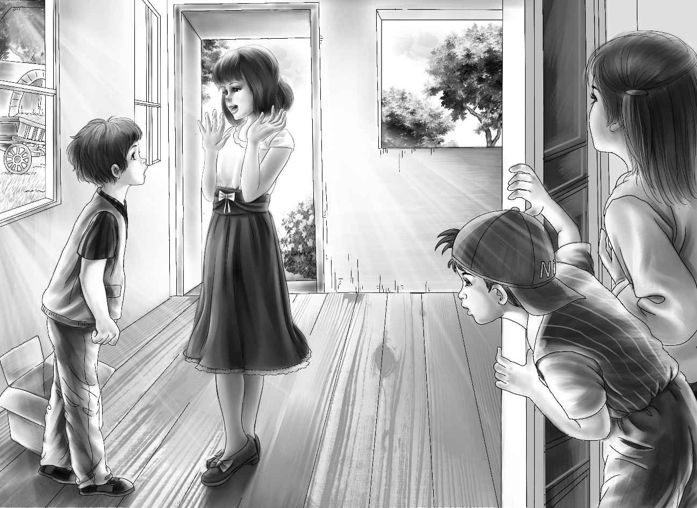

"I have to go up to the uranium mine," said Mr. Carter. "You can all come with me if you want. "
"I think I'll go to my neighbor's," said Mrs. Wood. "I'm all tired out with Mike's doings. "
"Yes,I'll go with you,Ma," said Pat. "Maybe I can help around the place,to pay for taking us in. "
"The rest of us will go with you,Mr. Carter," said Benny. "It's our own mine after all,and we haven't seen it yet. You come too,Mike. "
"Well,Benny,you are asking for trouble,"said Henry laughing.
"I'm no trouble," cried Mike. "I might help you. I know a lot of things. "
Soon they were on their way to the mine in Mr. Carter's car. When they arrived,they could see great machines at work. Workmen were every-where. Mr. Carter stopped his car at a large building. It had a small office in one corner.
"I'm going into the office for a few minutes," said Mr. Carter. "You may stay in the car and watch the men. But you must not go any closer than you are now. "
"Can't we go into the big building?" asked Benny.
Mr. Carter said,"Oh,yes,you can do that. But it is empty. Just one big room. Nothing to see. I'll be back soon. "
When Mr. Carter had shut the office door,Mike said,"I bet he's going to find out about insurance on our things and tell someone in there about the blue hat. "

"Yes," said Benny. "Let's see what is in that empty room. "
Benny got out of the car and quietly walked into the big,empty room. Jessie followed him. They stood looking around.
"A big room going to waste,Jessie!" said Benny.
"Yes,Benny," said his sister. For a minute they said nothing more. Jessie was thinking about what Benny had said—a big room going to waste.
"Look,Benny!" she said excitedly. "Do you remember what Mrs. Wood said about baking?"
"Yes,I do. She said she loved to bake pies and she didn't like to wash. "
"That's just right,Benny!Now listen!If we could get a good stove—"
"Mrs. Wood could bake in it," finished Benny.
"And right here in this very room," said Henry. One by one the others had come inside,too.
Then another gentle voice said,"I'm sure Grandfather would let us buy a stove. " It was Violet. She was smiling.
"My mother likes to make pies the best," said Mike. "On pies she is a wizard. "
Henry laughed. "Well,now that we are all here,let's get together on this. "
"My mother could sell pies to the miners,"said Mike. "There's about a million men,I should say. We could make money. And I could eat pies whenever I wanted to," Mike finished.
"If we had a stove," said Benny.
"Not quite a million men," said Henry. "Maybe a hundred or more. "
"Maybe we could all live up here," said Mike.
"You wouldn't want to live here,Mike," said Benny. "Wait till you see your room at Aunt Jane's. Right next to me. "
"We'll ask Mr. Carter what he thinks," said Jessie. "He knows everything and he will settle it. "
But it was really Mrs. Wood who settled it.